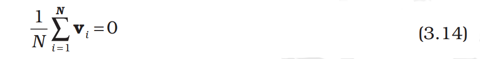
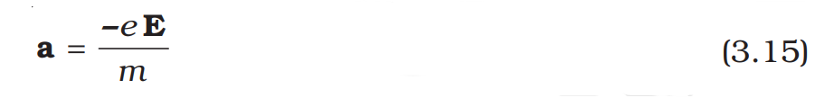
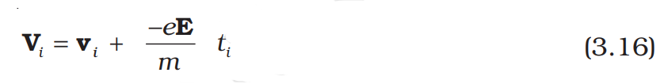
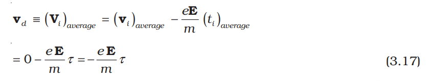

3.5 Drift Of Electrons And The Origin Of Resistivity
As remarked before, an electron will suffer collisions with the heavy fixed
ions, but after collision, it will emerge with the same speed but in random
directions. If we consider all the electrons, their average velocity will be
zero since their directions are random. Thus, if there are N electrons and
the velocity of the i
th electron (i = 1, 2, 3, ... N ) at a given time is vi
, then

Consider now the situation when an electric field is
present. Electrons will be accelerated due to this
field by

where –e is the charge and m is the mass of an electron.
Consider again the i
th electron at a given time t. This
electron would have had its last collision some time before t, and let ti
be the time elapsed after its last
collision. If vi was its velocity immediately after the last
collision, then its velocity Vi
at time t is

since starting with its last collision it was accelerated
(Fig. 3.3) with an acceleration given by Eq. (3.15) for a
time interval ti. The average velocity of the electrons at time t is the average of all the Vi’s. The average of vi’s is
zero [Eq. (3.14)] since immediately after any collision,
the direction of the velocity of an electron is completely random. The collisions of the electrons do not occur at regular intervals but at random times. Let us denote by τ, the average time between successive collisions. Then at a given time, some of the electrons would have spent time more than τ and some less than τ. In other words, the time ti in
Eq. (3.16) will be less than τ for some and more than τ for others as we go through the values of i = 1, 2 ..... N. The average value of tii then is τ
(known as relaxation time). Thus, averaging Eq. (3.16) over the N-electrons at any given time t gives us for the average velocity vi

This last result is surprising. It tells us that the
electrons move with an average velocity which is
independent of time, although electrons are
accelerated. This is the phenomenon of drift and the
velocity vd in Eq. (3.17) is called the drift velocity.
Because of the drift, there will be net transport of
charges across any area perpendicular to E. Consider
a planar area A, located inside the conductor such that
the normal to the area is parallel to E (Fig. 3.4). Then
because of the drift, in an infinitesimal amount of time
∆t, all electrons to the left of the area at distances upto
|vd|∆t would have crossed the area. If n is the number
of free electrons per unit volume in the metal, then
there are n ∆t |vd|A such electrons. Since each
electron carries a charge –e, the total charge transported across this area
A to the right in time ∆t is –ne A|vd
|∆t. E is directed towards the left and
hence the total charge transported along E across the area is negative of
this. The amount of charge crossing the area A in time ∆t is by definition
[Eq. (3.2)] I ∆t, where I is the magnitude of the current. Hence,
I∆t = +neA|vd|∆t ----------> (3.18)
Substituting the value of |vd
| from Eq. (3.17)
2
∆ = ∆ τ E
e A I t n t
m
(3.19)
By definition I is related to the magnitude |j| of the current density by
I = |j|A (3.20)
Hence, from Eqs.(3.19) and (3.20),
2
j E = τ
ne
m
(3.21)
The vector j is parallel to E and hence we can write Eq. (3.21) in the
vector form
2
j E = τ
ne
m
(3.22)
Comparison with Eq. (3.13) shows that Eq. (3.22) is exactly the Ohm’s
law, if we identify the conductivity σ as
ne
m
σ τ = (3.23)
We thus see that a very simple picture of electrical conduction
reproduces Ohm’s law. We have, of course, made assumptions that τ
and n are constants, independent of E. We shall, in the next section,
discuss the limitations of Ohm’s law.
3.5.1 Mobility
As we have seen, conductivity arises from mobile charge carriers. In
metals, these mobile charge carriers are electrons; in an ionised gas, they
are electrons and positive charged ions; in an electrolyte, these can be
both positive and negative ions.
An important quantity is the mobility µ defined as the magnitude of
the drift velocity per unit electric field:
| |d
E
µ =
v
(3.24)
The SI unit of mobility is m2/Vs and is 104
of the mobility in practical
units (cm2
/Vs). Mobility is positive. From Eq. (3.17), we have
vd
=
e Eτ
m
Hence,
τ
µ = =
vd e
E m (3.25)
where τ is the average collision time for electrons.